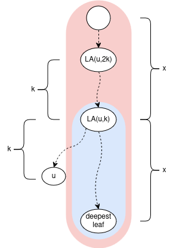
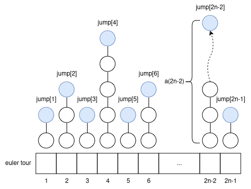
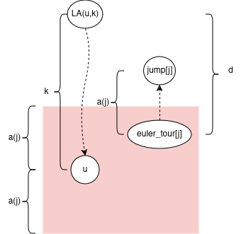
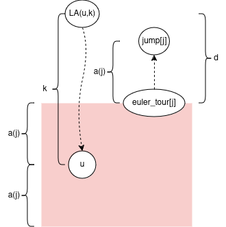
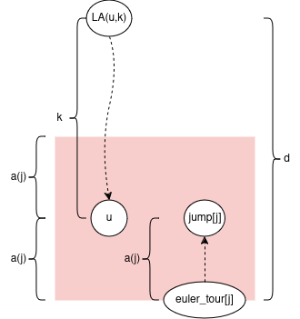
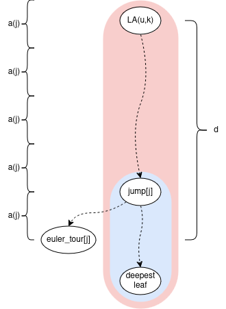

I recently read “Still Simpler Static Level Ancestors by Torben Hagerup” describing how to process a rooted tree in \(O(n)\) time/space to be able to answer online level ancestor queries in \(O(1)\). I would like to explain it here. Thank you to Cameron Custer for proof-reading and giving feedback.
Background/Warmup
Prerequisites: ladder decomposition and <O(n),O(1)> offline level ancestor
First, to define a level ancestor query: For a node \(u\), and integer \(k\), let \(LA(u, k)\) = the node \(k\) edges “up” from \(u\). Formally a node \(v\) such that:
- \(v\) is an ancestor of \(u\)
- \(distance(u, v) = k\) (distance here is number of edges)
For example \(LA(u, 0) = u\)
Now the slowest part of ladder decomposition is the \(O(n \cdot log(n))\) binary lifting. Everything else is \(O(n)\). So the approach will be to swap out the binary lifting part for something else which is \(O(n)\).
Note we can do the following, and it will still be \(O(n)\):
- Store the answers to \(O(n)\) level ancestor queries of our choosing (answered offline during the initial build)
- Normally in ladder decomposition, \(length(ladder) = 2 \cdot length(verticalPath)\). But we can change this to \(length(ladder) = c \cdot length(verticalPath)\) for any constant \(c\) (of course the smaller the better).
The key observation about ladders: Given any node \(u\) and integer \(k\) \((0 ≤ k ≤ \frac{depth[u]}{2})\):
The ladder which contains \(LA(u, k)\) also contains \(LA(u, 2 \cdot k)\); or generally \(LA(u, c \cdot k)\) when we extend the vertical paths by the multiple of \(c\)
The Magic Sequence
Let’s take a detour to the following sequence \(a(i)\) = highest power of \(2\) which divides \(i\) for \(i ≥ 1\) https://oeis.org/A006519
1 2 1 4 1 2 1 8 1 2 1 4 1 2 1 16 1 2 1 4 1 2 1 8 1 2 1 4 1 2 1 32 1 2 1 4 1 …
Observe: for every value \(2^k\), it shows up first at index \(2^k\) (1-based), then every \(2^{k+1}\)-th index afterwards.
Q: Given index \(i ≥ 1\), and some value \(2^k\), I can move left or right. What’s the minimum steps I need to travel to get to the nearest value of \(2^k\)?
A: at most \(2^k\) steps. The worst case is I start at \(a(i) = 2^l > 2^k\), e.g. exactly in the middle of the previous, and next occurrence of \(2^k\)
The Algorithm
Let’s do a \(2 \cdot n - 1\) euler tour; let the \(i\)’th node be \(eulerTour[i]\); \(i ≥ 1\). Let’s calculate an array \(jump[i] = LA(eulerTour[i], a(i))\) offline, upfront.
how to use the \(jump\) array to handle queries?
Let node \(u\), and integer \(k\) be a query. We can know \(i\) = \(u\)’s index in the euler tour (it can show up multiple times; any index will work).
key idea: We want to move either left, right in the euler tour to find some “close”-ish index \(j\) with a “big” jump upwards. But not too big: we want to stay in the subtree of \(LA(u, k)\). Then we use the ladder containing \(jump[j]\) to get to \(LA(u, k)\). The rest of the blog will be the all math behind this.
It turns out we want to find closest index \(j\) such that \(2 \cdot a(j) ≤ k < 4 \cdot a(j)\). Intuition: we move roughly \(\frac{k}{2}\) steps away in the euler tour to get to a node with an upwards jump of size roughly \(\frac{k}{2}\).
Note if we move to \(j\): \(|depth[eulerTour[i]] - depth[eulerTour[j]]| ≤ |i - j| ≤ a(j)\)
how to calculate \(j\) in \(O(1)\)
First we calculate the power-of-2 \(targetValue\) such that \(2 \cdot targetValue ≤ k < 4 \cdot targetValue\):
targetValue = bit_floor(k / 2) = 1 << __lg(k/2)
Here, we want \(\frac{k}{2} ≥ 1\) for it to work, so if \(k < 2\) then calculate \(LA(u, k)\) naively.
Now we want the closest index j with \(a(j) ==
targetValue\). First zero-out all unwanted least
significant bits with i & -targetValue.
Then ensure the correct value of __builtin_ctz by or-ing in
the targetValue:
j = i & -targetValue | targetValue
Note we’re not creating a ladder of length \(c \cdot a(i)\) starting from every node because that sums to \(c \cdot (a(1)+a(2)+...+a(2n-1)) = O(n \cdot log(n))\). Rather it’s a vertical path decomposition (sum of lengths is exactly \(n\)), and each vertical path is extended upwards to \(c\) times its original length into a ladder (sum of lengths ≤ \(c \cdot n\))
Finding the Smallest \(c\) for Ladders to be Long Enough
Let’s prove some bounds on \(d = depth[eulerTour[j]] - depth[LA(u, k)]\)
Note \(2 \cdot a(j) ≤ k\) from earlier. So \(a(j) = 2 \cdot a(j) - a(j) ≤ k - a(j) ≤ d\). This implies \(jump[j]\) stays in the subtree of \(LA(u, k)\).
Note \(k < 4 \cdot a(j)\) from earlier. So \(d ≤ a(j) + k < a(j) + 4 \cdot a(j) = 5 \cdot a(j)\)
if we choose \(c=5\) then \(length(ladder) = 5 \cdot length(verticalPath) ≥ 5 \cdot a(j) > d\), so the ladder is long enough to always contain \(LA(u,k)\)
I mean that constant factor kinda sucks :( Well, at least we’ve shown a way to do the almighty, all-powerful theoretical <\(O(n),O(1)\)> level ancestor, all hail to the almighty. If thou is tempted by method of 4 russians, thou shall receive eternal punishment.
c++ code with everything discussed so far
// https://oeis.org/A006519
int a(int i) {
assert(i >= 1);
return i & -i;
}
struct linear_level_ancestor {
int n;
vector<vector<int>> adj;
vector<int> depth;
vector<int> parent;
vector<int> jump;
vector<int> deepest_leaf;
vector<int> euler_tour_index;
vector<int> dfs_stack;
vector<vector<int>> ladder;
linear_level_ancestor(const vector<vector<int>>& adj) : n(ssize(adj)), adj(adj), depth(n), parent(n), deepest_leaf(n), euler_tour_index(n), ladder(n) {
dfs(0);
assert(ssize(jump) == 2 * n - 1);
for (int i = 0; i < n; i++)
if (parent[i] == i || deepest_leaf[parent[i]] != deepest_leaf[i]) {
int leaf = deepest_leaf[i];
auto& lad = ladder[leaf];
lad.resize(min((depth[leaf] - depth[i]) * 5, depth[leaf] + 1), leaf);
for (int k = 1; k < ssize(lad); k++)
lad[k] = parent[lad[k - 1]];
}
}
void add_jump() {
jump.push_back(dfs_stack[0]);
int i = ssize(dfs_stack) - 1 - a(ssize(jump));
if (i > 0) jump.back() = dfs_stack[i];
}
void dfs(int u) {
dfs_stack.push_back(u);
add_jump();
euler_tour_index[u] = ssize(jump);
deepest_leaf[u] = u;
for (int v : adj[u]) {
if (v == parent[u]) continue;
parent[v] = u;
depth[v] = depth[u] + 1;
dfs(v);
add_jump();
if (depth[deepest_leaf[u]] < depth[deepest_leaf[v]])
deepest_leaf[u] = deepest_leaf[v];
}
dfs_stack.pop_back();
}
//kth parent of u
int LA(int u, int k) {
assert(0 <= k && k <= depth[u]);
if (k == 0) return u;
if (k == 1) return parent[u];
int target_value = bit_floor(unsigned(k / 2));
assert(2 * target_value <= k && k < 4 * target_value);
//now want to find closest index j with a(j) == target_value
int j = (euler_tour_index[u] & -target_value) | target_value;
assert(a(j) == target_value);
assert(abs(j - euler_tour_index[u]) <= target_value);
int leaf = deepest_leaf[jump[j - 1]];
k += depth[leaf] - depth[u];
assert(0 <= k && k < ssize(ladder[leaf]));
return ladder[leaf][k];
}
};
A Cool Thing
Here’s some intuition for why we chose the sequence \(a(i)\): It contains arbitrarily large jumps which appear regularly, sparsely. Sound familiar to any algorithm you know? It feels like linear jump pointers. Let’s look at the jump sizes for each depth:
1,1,3,1,1,3,7,1,1,3,1,1,3,7,15,1,1,3,...
Map \(x ⇒ \frac{x+1}{2}\) and you get https://oeis.org/A182105.
https://oeis.org/A006519 is kinda like the in-order traversal of a complete binary tree, and https://oeis.org/A182105 is like the post-order traversal.
Improving the Constant Factor
Let’s introduce a constant \(κ\) \((κ >= 2)\).
Instead of calculating \(jump[i]\) as \(LA(eulerTour[i], a(i))\), calculate it as \(LA(eulerTour[i], (κ-1) \cdot a(i))\)
Let node \(u\), and integer \(k\) be a query. We want to find nearest \(j\) such that \(κ \cdot a(j) ≤ k < 2 \cdot κ \cdot a(j)\)
Then you can bound \(d\) like: \((κ-1) \cdot a(j) ≤ d < (2 \cdot κ + 1) \cdot a(j)\)
And you can show \(c\) needs to be \(≥ \frac{2 \cdot κ + 1}{κ - 1}\) for the ladders to be long enough.
The catch is when \(k < κ\), you need to calculate \(LA(u,k)\) naively (or maybe store them).
The initial explanation is for \(κ = 2\) btw
c++ code with \(κ\)
// https://oeis.org/A006519
int a(int i) {
assert(i >= 1);
return i & -i;
}
struct linear_level_ancestor {
int n;
const int kappa;
vector<vector<int>> adj;
vector<int> depth;
vector<int> parent;
vector<int> jump;
vector<int> deepest_leaf;
vector<int> euler_tour_index;
vector<int> dfs_stack;
vector<vector<int>> ladder;
linear_level_ancestor(const vector<vector<int>>& adj, int kappa) : n(ssize(adj)), kappa(kappa), adj(adj), depth(n), parent(n), deepest_leaf(n), euler_tour_index(n), ladder(n) {
assert(kappa >= 2);
dfs(0);
assert(ssize(jump) == 2 * n - 1);
for (int i = 0; i < n; i++)
if (parent[i] == i || deepest_leaf[parent[i]] != deepest_leaf[i]) {
int leaf = deepest_leaf[i];
auto& lad = ladder[leaf];
lad.resize(min((depth[leaf] - depth[i]) * (2 * kappa + 1) / (kappa - 1), depth[leaf] + 1), leaf);
for (int k = 1; k < ssize(lad); k++)
lad[k] = parent[lad[k - 1]];
}
}
void add_jump() {
jump.push_back(dfs_stack[0]);
int i = ssize(dfs_stack) - 1 - (kappa - 1) * a(ssize(jump));
if (i > 0) jump.back() = dfs_stack[i];
}
void dfs(int u) {
dfs_stack.push_back(u);
add_jump();
euler_tour_index[u] = ssize(jump);
deepest_leaf[u] = u;
for (int v : adj[u]) {
if (v == parent[u]) continue;
parent[v] = u;
depth[v] = depth[u] + 1;
dfs(v);
add_jump();
if (depth[deepest_leaf[u]] < depth[deepest_leaf[v]])
deepest_leaf[u] = deepest_leaf[v];
}
dfs_stack.pop_back();
}
//kth parent of u
int LA(int u, int k) {
assert(0 <= k && k <= depth[u]);
if(k < kappa) {
while(k--) u = parent[u];
return u;
}
int target_value = bit_floor(unsigned(k / kappa));
assert(kappa * target_value <= k && k < 2 * kappa * target_value);
int j = (euler_tour_index[u] & -target_value) | target_value;
assert(a(j) == target_value);
assert(abs(j - euler_tour_index[u]) <= target_value);
int leaf = deepest_leaf[jump[j - 1]];
k += depth[leaf] - depth[u];
assert(0 <= k && k < ssize(ladder[leaf]));
return ladder[leaf][k];
}
};